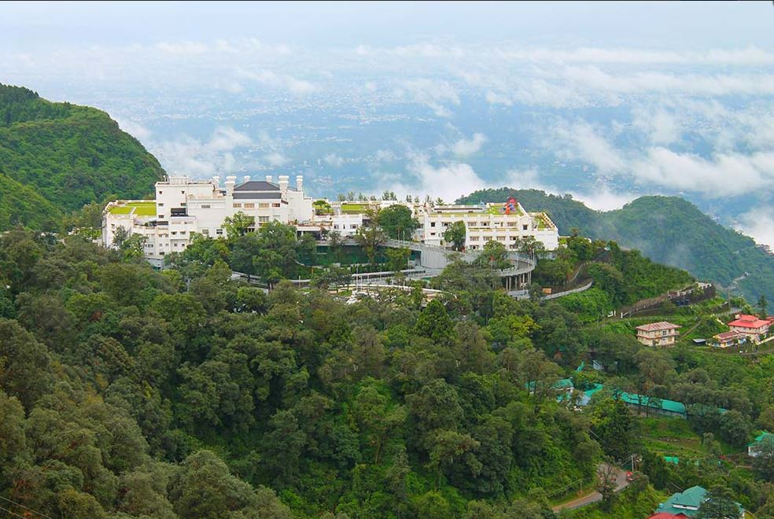
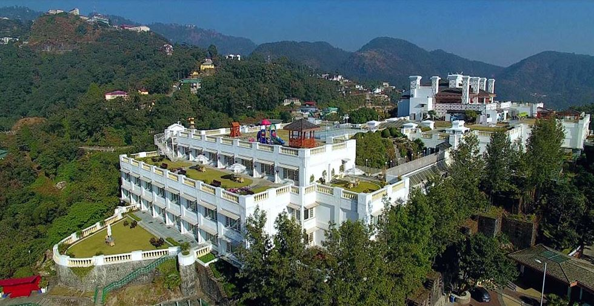
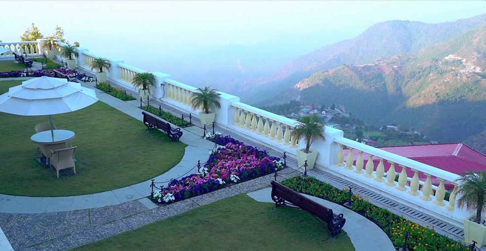
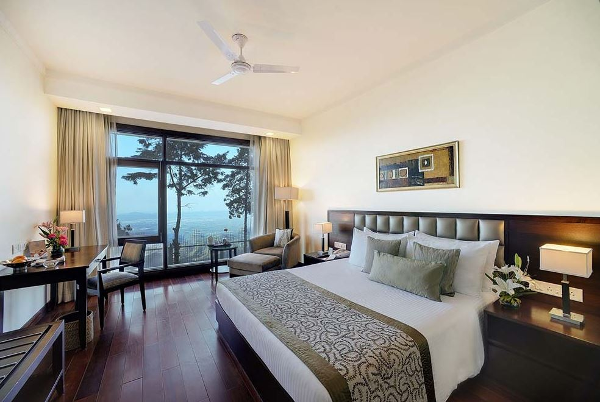
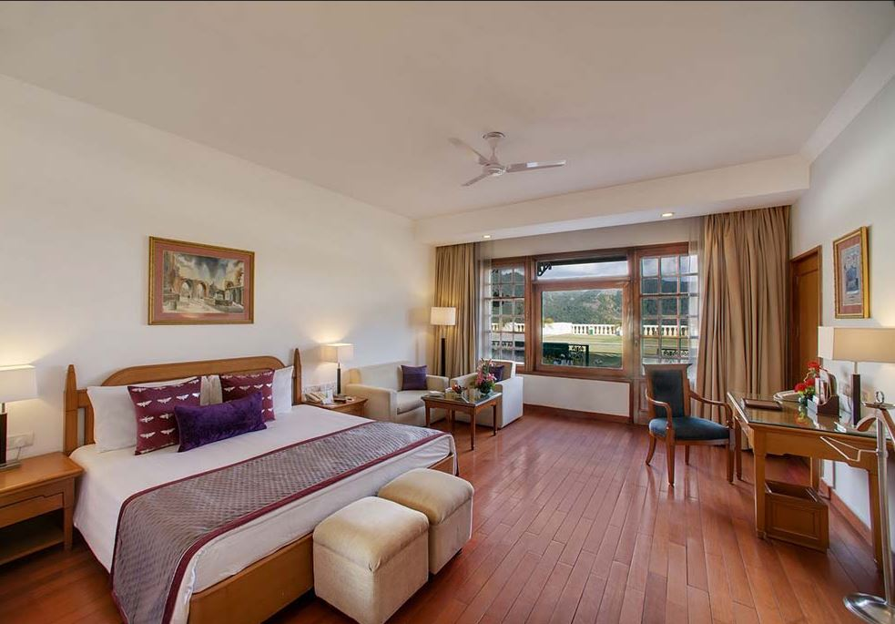
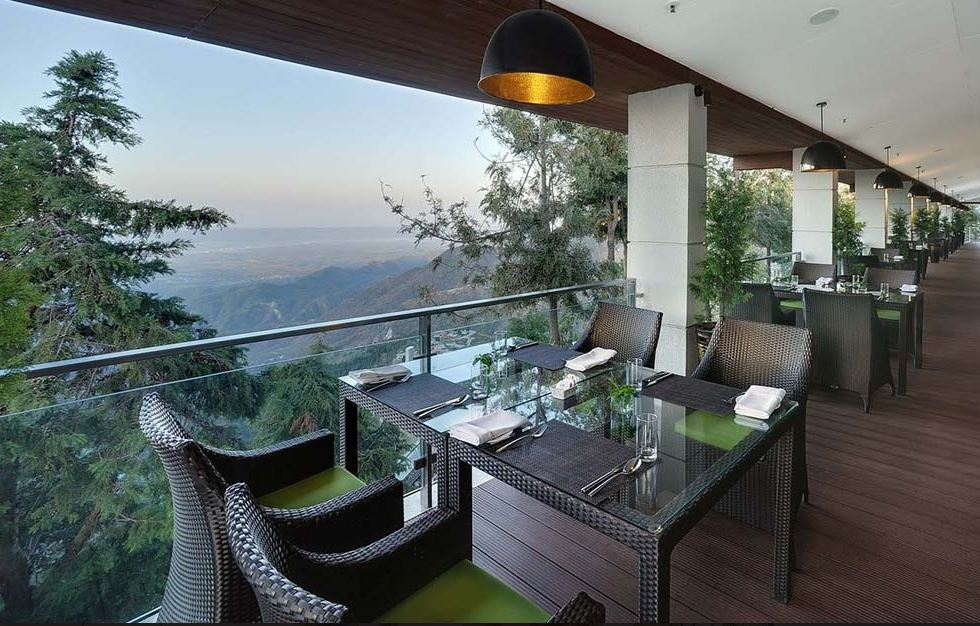
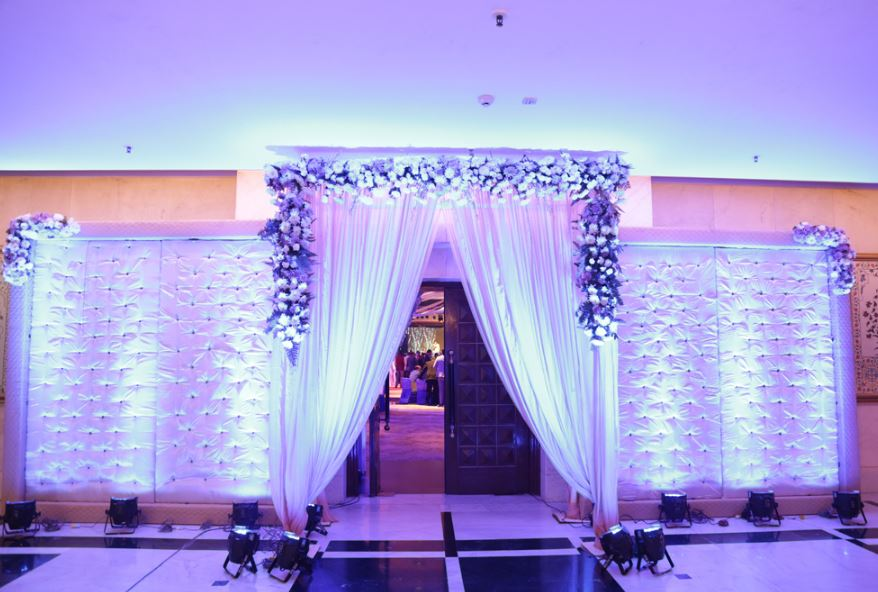
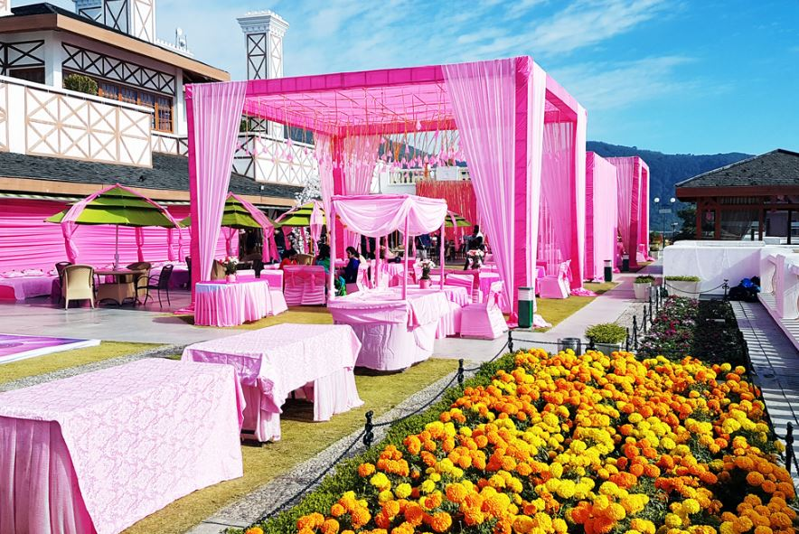
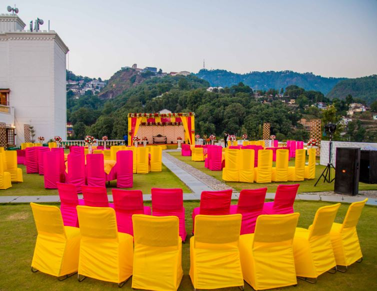
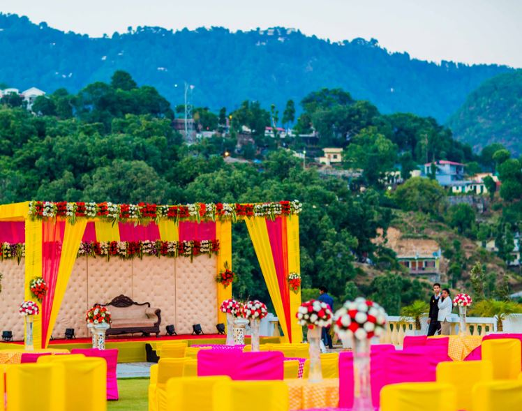

<div class="container project-view">
    
	<div class="row">
        <div class="col-md-8 project-images">
            
            
            
            
            
            
            
            
            
            
        </div>
        <div class="col-md-4">
            <div class="project-info">
                <h2>Jaypee Residency Manor</h2>

                <div class="details">
                    <div class="info-text">
                        <span class="title">Location</span>
                        <span class="val">Mussoorie</span>
                    </div>

                    <div class="info-text">
                        <span class="title">Category</span>
                        <span class="val">Luxury Wedding</span>
                    </div>
                </div>
					Jaypee Residency Manor in Mussoorie, India is where your romance with the mountains begins. With a 360 degree breathtaking view of the mighty Himalayas, it is a sight to behold.
                    Spread over 9 acres of lush green area, on a hilltop, this unique five star deluxe hotel is your own paradise. The hotel is a tribute to the majesty - splendor of Mussoorie "the queen of hills".
				<br/><br/>
					This splendid and royal creation always makes you feel at home, besides just letting you experience a deluxe stay. This lavish hotel offers exotic stays, food flavors and much more within serene surroundings that are heart-winning for sure. So all those, looking to explore the opulence of a deluxe hotel can easily count upon Jaypee Residency Manor as this magical creation will surely add on to your overall experience.
				<br/><br/>
					Strategically located at a height of approximately 7000 feet, Jaypee Residency Manor offers spectacular views, unbridled luxury, and an un-interrupted encounter with nature combined with exceptional service. There is no denying on the fact that this lavish creation is a fine concoction of deluxe accommodation, recreation and rejuvenation, hence offers every kind of modern facility that a man would demand today. This meticulously designed masterpiece provides wide scope for all the travelers and vacationers to find refuge in its tranquil and serene ambience. The kind of food available at this luxury hotel is one of a kind that will serve to your taste buds until your senses are fully taken over. So, get ready to indulge in the luxury and sumptuousness offered by Jaypee Residency Manor.
                        
            </div>
        </div>
    </div>
</div>